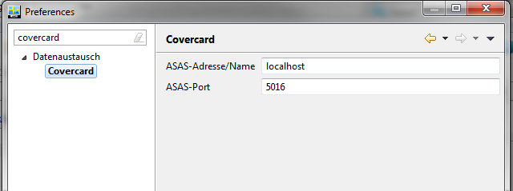
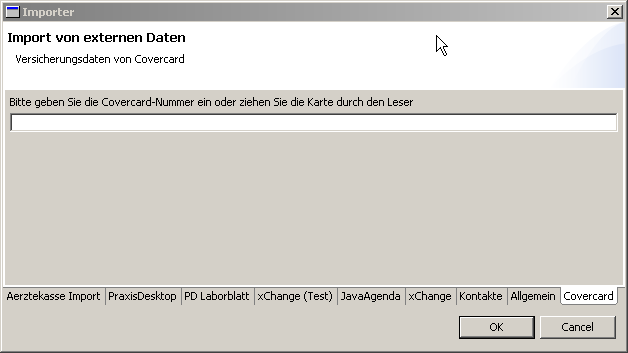
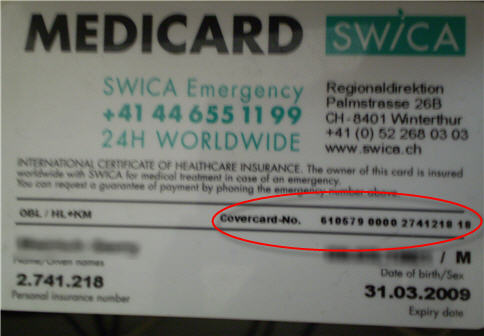
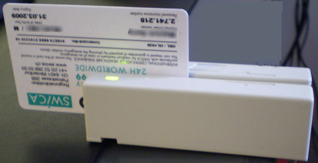
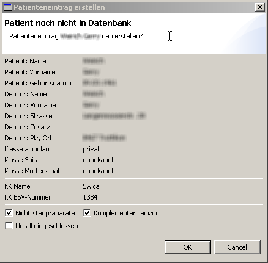

Ch.elexis.covercard.feature.feature.group
| Version: | 3.0.0 |
| Kategorie: | Geräteanbindung |
| Beschreibung: | Anbindung Covercard |
| Author: | |
| Letzte Bearbeitung: | 10. Juni 2014 |
| Voraussetzungen: | |
| Betriebssystem: | Windows, Mac, Linux |
| Lizenz: |
Contents
Einführung
Dieses Plugin dient dazu, das Covercard-System in Elexis einzubinden. Damit können Schweizer Patienten- und Versicherungsdaten direkt von der Krankenkassen-Karte ins System übernommen bzw. wenn nötig korrigiert werden.
Voraussetzungen
Sie benötigen ein HIN-Konto, und Sie müssen den Covercard-Dienst für Ihr HIN-Konto freischalten lassen (Wenden Sie sich hierzu direkt an HIN, http://www.hin.ch/covercard). Ausserdem ist es empfehlenswert (aber nicht zwingend), einen Magnetkartenleser zu besorgen, um die auf der Karte gespeicherten Daten automatisch auslesen zu können. Dieses Plugin benötigt Elexis ab Version 3.0 und das Plugin elexis-arzttarife_ch
Installation und Konfiguration
Falls Sie elexis-covercard über elexis-pro bezogen haben, ist es bereits installiert. Andernfalls kopieren Sie das Plugin in Ihr Plugins-Verzeichnis und starten Sie Elexis neu. Beim ersten Start erstellt das Covercard-Plugin ein neues Abrechnungssystem mit dem Titel Covercard und denselben sonstigen Einstellungen wie das Abrechnungssystem KVG. Die Konfiguration des Plug-In erfolgt unter Einstellungen/Datenaustausch/Covercard, hier müssen standardmässig folgende Werte, wie auf beiliegender Grafik ersichtlich, eingetragen werden: Server-Name localhost, Server-Port 5016. 
Verwendung
Wählen Sie im Menu Datei – Datenimport und klicken Sie dann auf den Reiter Covercard.  Wenn Sie keinen Kartenleser haben, tippen Sie die Covercard-Nummer ins Textfeld ab. Wenn Sie einen Kartenleser haben, genügt es, die Karte durchzuziehen.  
Ergebnis
Folgende Ergebnisse sind möglich:
Fehlermöglichkeiten
Im Fehlerfall wird elexis-covercard ein Meldungsfenster mit der entsprechenden Fehlermeldung anzeigen. Möglich sind folgende Fehler:
- Es konnte keine Verbindung hergestellt werden. Dies kann passieren, wenn die Internet-Verbindung unterbrochen ist, oder wenn der ASAS-Client nicht eingeschaltet ist, oder wenn nicht das korrekte Passwort beim aufstarten des ASAS-clients eingegeben wurde. Überprüfen Sie, ob der ASAS-Client aktiv ist.
- Die Nummer ist falsch, Anwendungsfehler: Die Nummer ist formal ungültig. Vielleicht wurde sie falsch abgetippt oder der Magnetstreifen der Karte war verschmutzt. Versuchen Sie es nochmals.
- Die Nummer ist formal korrekt, aber der Patient ist nicht in der Covercard-Datenbank enthalten. In diesem Fall bleibt Ihnen nichts übrig, als die Angaben von der Karte manuell zu übernehmen.
Deshalb folgendes überprüfen
- läuft der Covercard Service
- ist die verwendete HIN Identität für den Service zugelassen ist
- die Karte ungültig resp. nicht beim Covercardservice bekannt ist (gibt ein paar Versicherer die dort nicht dabei sind)
Das kann man kontrollieren, indem man mit einem Browser auf hin.covercard.ch geht und dort die Kartennummer eingibt. Wir erhalten in Elexis dieselbe Antwort, die es dort auch gibt.
Neuer Patient
 Der Karteninhaber ist nicht in der Elexis-Datenbank vorhanden. In diesem Fall erscheint ein Dialog wie nebenstehend. Wenn Sie diesen Patienten neu aufnehmen wollen, klicken Sie auf OK, andernfalls auf Abbrechen bzw. Cancel. Wenn ein Patienteneintrag neu erstellt wird, wird dann auch gleich ein Covercard-Fall erstellt. Anmerkung: Es ist denkbar, dass der Patient doch schon in der Datenbank enthalten ist, beispielsweise mit einem leicht anders geschriebenen Namen oder Vornamen oder mit einem anderen Geburtsdatum (Einträge werden nur dann als identisch akzeptiert, wenn sowohl Name als auch Vorname als auch Geburtsdatum als auch Geschlecht identisch sind). Falls Sie also der Meinung sind, dass der genannte Patient doch schon in der Datenbank enthalten ist oder sein müsste, machen Sie lieber einen manuellen Vergleich.
Patient bereits in Datenbank
Wenn der Karteninhaber bereits in der Elexis-Datenbank vorhanden ist, und alle Daten mit den Angaben auf der Karte übereinstimmen, erscheint lediglich eine Meldung, dass keine Unterschiede vorhanden sind. Falls der Karteninhaber in der Datenbank enthalten ist, aber bisher ohne Covercard, dann wird ein neuer Fall mit den Daten dieser Covercard erstellt. Falls der Karteninhaber eine neue Covercard hat (Beispielsweise weil er eine andere Krankenkasse hat, oder weil er für Grund- und Zusatzversicherungen verschiedene Covercards benützt), dann wird ein neuer Fall anhand der neuen Covercard erstellt werden soll.1. Wenn ein Patient mehrere Covercards hat, können Sie also ohne weiteres alle Covercards einlesen; es wird für jede ein eigener Fall erstellt. Es empfiehlt sich, den Fällen jeweils manuell unterscheidbare Fallbezeichnungen zu geben (z.B. Grund- und Zusatzversicherung).
Anpassung des Kostenträgers
Der Kostenträger wird anhand der auf der Karte gespeicherten BSV-Nummer und des Namens identifiziert. Falls ein Kostenträger mit diesem Namen und dieser BSV-Nummer schon in der Datenbank enthalten ist, kann dieser direkt übernommen werden. Wenn der Kostenträger nicht sicher identifiziert werden kann, dann werden Sie aufgefordert, in einer Kontaktliste anzugeben, welcher Eintrag dem auf der Karte genannten Kostenträger entspricht. Wählen Sie diesen an und klicken Sie OK. Wenn keiner der vorhandenen Kontakte dem Kostenträger auf der Karte entspricht, dann klicken Sie "‘Abbrechen"’. In diesem Fall wird ein neuer Kostenträger mit den Angaben auf der Karte neu erstellt.
Anpassung des Rechnungsempfängers
Auch der Rechnungsempfänger (auf der Karte als Debitor genannt), wird versucht, anhand der Kartendaten zu identifizieren. Im Tiers Garant System wird dies im Allgemeinen der Karteninhaber oder der gesetzliche Vertreter des Karteninhabers sein. Auch hier müssen Sie ggf. den richtigen Kontakt (ggf. den eben neu erstellten Patienten selbst) aus einer Kontaktliste auswählen und zuordnen. 1 Man sollte niemals einen existierenden Fall ändern, wenn die Versicherung sich geändert hat, da sonst ja frühere Konsultationen nicht mehr die korrekte Informationen enthalten würden. Es sollte deswegen immer ein neuer Fall erstellt werden, wenn die Versicherungsdaten sich ändern.